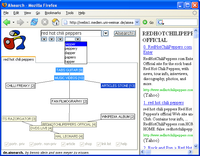
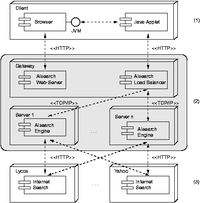

<script type="application/ld+json">
    {
        "@context": "http://schema.org/",
        "@type": "Research",
        "name": "AIsearch",
        "description": "",
        "url": "https://webis.de/research/aisearch.html",
        "keywords": [
            "aisearch"
        ],
        "creator": [{
                "@type": "Organization",
                "url": "https://webis.de/",
                "name": "The Web Technology & Information Systems Network",
                "alternateName": "Webis"
            },
            {
                "@type": "Person",
                "url": "http://www.uni-weimar.de/medien/webis/people/#meyer-zu-eissen",
                "affiliation": "Bauhaus-Universit\u00e4t Weimar",
                "name": "Meyer, Sven"
            },
            {
                "@type": "Person",
                "url": "http://www.uni-weimar.de/medien/webis/people/#stein",
                "affiliation": "Bauhaus-Universit\u00e4t Weimar",
                "name": "Stein, Benno"
            }
        ],
        "includedInDataCatalog": {},
        "distribution": []
    }
</script>

<main class="uk-section uk-section-default">
    <div class="uk-container">
        <h1>AIsearch</h1>

        <ul class="uk-list">
            <!-- Comment out sections you do not provide -->
            <li><span data-uk-icon="chevron-down"></span> <a href="#synopsis">Synopsis</a></li>
            <li><span data-uk-icon="chevron-down"></span> <a href="#research">Research</a></li>
            <li><span data-uk-icon="chevron-down"></span> <a href="#people">People</a></li>
            <li><span data-uk-icon="chevron-down"></span> <a href="#publications">Publications</a></li>
        </ul>
    </div>

    <div class="uk-container uk-margin-medium">
        <!--
        SECTION Synopsis
        -->
        <h2 id="synopsis">Synopsis</h2>

        <div style="display:flex">
            <div>
                <p>AIsearch offers a convenient interface for Web-based search and combines algorithms for the
                    formation,
                    labeling, and visualization of categories along with a smart spelling analysis. [<a
                        data-htmlarea-external="1" class="external-link" href="http://www.uni-weimar.de/medien/webis/research/activities/aisearch/aisearch-video.html">video</a>]
                </p>
                <p>AIsearch was finalist in the European Academic Software Award (EASA) competition and received a
                    special
                    prize as research tool.</p>
            </div>
            
        </div>


        <!--
        SECTION Research
        -->
        <h2 id="research">Research</h2>
       <div style="display:flex">
        <p><em>Searching with AIsearch</em>. A search process with the AIsearch Web interface starts as usual: A query in the form of interesting search terms is entered within a dialog field. The query is sent to several search engines and for a syntactic analysis to a <em>SmartSpell<sup>&reg;</sup></em> server. The query results, i. e., the HTML document snippets, are collected and analyzed with respect to the similarity of their contents. Based on this analysis, adequate categories are formed and labeled, and a tree of the categories, which shows related categories at a closer distance than unrelated categories, is drawn in the hyperbolic plane. The following figure shows a snapshot of the AIsearch Web interface for the query &quot;tea flavour&quot;. Aside from the hyperbolic category tree, the returned document snippets can also be browsed in a list format. The list groups all snippets of the same category together, and, immediate access to each sublist is possible by simply clicking the leafs in the category tree.</p>
        
       </div> 
       <p><em>Query Analysis with SmartSpell<sup>&reg;</sup></em>. The terms of the query are checked with respect to both correct spelling and similar terms. For this job the powerful <em>SmartSpell</em> algorithm is used. <em>SmartSpell</em> analyzes spelling errors with regard to the editing distance, the Levinshtein distance, and the phonological distance against a dictionary. The phonological interpretation depends on a language's level of phonemicity and is realized with a sophisticated, phoneme-dependent word similarity measure. To efficiently find syntactic and phonetic similar words for a search term, <em>SmartSpell</em> operationalizes several paradigms of heuristic search: nogood-lemma generation, search space pruning based on over- and underestimation, iterative deepening search, and memorization. The following table shows some examples of misspelled words along with <em>SmartSpell</em>'s proposals and similarity estimations.</p>

    <table class="uk-table">
            <thead>
                <tr class="tr-even tr-0">
                    <th class="td-o" scope="col">
                        Misspelled word
                    </th>
                    <th class="td-last" scope="col">
                        SmartSpell<sup>&reg;</sup> proposal (similarity)
                    </th>
                </tr>
            </thead>
            <tbody>
                <tr class="tr-odd tr-1">
                    <td class="td-0">aksekjushon</td>
                    <td class="td-2"> execution (81%) </td>
                </tr>
                <tr class="tr-even tr-2">
                    <td class="td-0">angenearing</td>
                    <td class="td-2">engineering (92%) </td>
                </tr>
                <tr class="tr-odd tr-3">
                    <td class="td-0">blu</td>
                    <td class="td-2">blue (93%), blew (92%) </td>
                </tr>
                <tr class="tr-even tr-4">
                    <td class="td-0">buysikel</td>
                    <td class="td-2">physical (85%), bicycle (82%) </td>
                </tr>
                <tr class="tr-odd tr-5">
                    <td class="td-0">shoor</td>
                    <td class="td-2">shoal (88%), shoo (88%), sure (82%) </td>
                </tr>
            </tbody>
        </table>
        <p>Examples for misspelled words (left column) and the<em> SmartSpell </em>proposals with similarity estimations (right column).<em> Sm</em><em>artSpell'</em>s proposals of similar search terms are directly integrated in the query field; they enable the reformulation, extension, or correction of a query by the press of a button.</p>

        <p><em>Category Formation</em>. AIsearch implements a new clustering algorithm (MajorClust) for the automatic categorization of document collections. Several analyses have shown the high quality of the found categories. To compare different clusterings of search results, AIsearch employs strategy patterns to make term weighting schemes, similarity measures, clustering algorithms, and cluster validity measures interchangeable at runtime. For efficient text handling, the symbol processing algorithms for text parsing, text compression, and text comparison utilize specialized flyweight patterns.</p>

        <div style="display:flex">
            <p>
                Software Architecture and Deployment. The figure shows how the AIsearch components are deployed to machines. When a user enters the AIsearch URL in his browser, a Java Applet that contains the AIsearch user interface is delivered from the Web server, which in turn communicates with the load balancing module. All requests from the client, such as a request for spelling or a request for search, are coded in a proprietary protocol that contains several commands. Whenever a command reaches the load balancing module, one of the AIsearch engines is chosen to perform the associated task. All commands are processed asynchronously. All computationally expensive tasks are performed as threads, which allows us to run several commands simultaneously on a single AIsearch engine. Moreover, the threading model supports multiprocessor machines ideally, and, combined with a load balancing concept, assures a simple scalability of the architecture.

            </p>
            
        </div>

            <!--
        SECTION People
        -->
            <h2 id="people">People</h2>
            <ul>
                <li><a href="http://www.uni-weimar.de/medien/webis/people/#meyer-zu-eissen" title="Sven Meyer zu Eissen">Sven Meyer zu Eissen</a></li>
                <li><a href="http://www.uni-weimar.de/medien/webis/people/#stein" title="Benno Stein">Benno Stein</a></li>
            </ul>

            <!--
	SECTION Publications
	-->
            <h2 id="publications">Publications</h2>
            <div id="publications-list">
            </div>
        </div>
    </div>
</main>

<script src="https://webis.de/js/bibentry.js"></script>
<script>
includeBibentries(document.getElementById("publications-list"), "projects:aisearch");
</script>